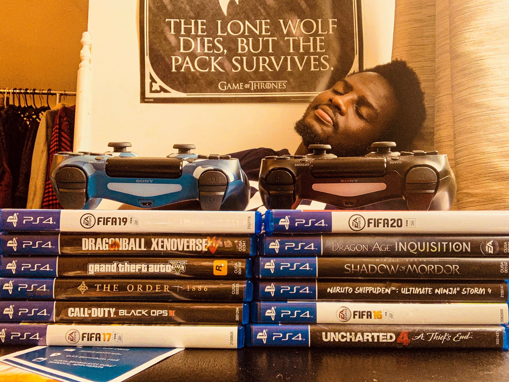

"There is never enough time to enjoy what you love"
-Joyce Rachelle
FOOTBALL

Football, Soccer, or Futbol, whatever it is called wherever you’re from, has never for one moment ceased to bring me joy. There is something just so beautiful about the sport I don’t know what it is. I’ve been watching and following football from a very young age and it’s fair to say I’ve seen it all – celebrations, heartbreaks, excitement, disappointment, which are a few of the many emotions the beautiful game puts you through. Not only do I enjoy watching the sport, but playing it gives me so much joy. In my freshman year, I chose to join the school team because I wanted to feel and experience football in its competitive state. Other than playing amongst friends for something as trivial as bragging rights, I had yet to experience the intense side of it like I usually watch on tv with unusually high stakes. I’ve gotta say that the process to get in was not easy. Days of getting in shape so I wouldn’t flunk the tryouts weren’t the best, but I was able to get in! Phew! I had never experienced a closer bond with so many people than I did with my teammates at the time.
I enjoyed every bit of it, and it made me feel at home. Series of losses and wins, motivation and fatigue, I finally got the chance to be in that atmosphere that I had longed for, for a long time. Unfortunately, I had to eventually quit the team after a year due to the overbearing commitment it had. I had to do this because I was serious about my school work, and being an engineering major didn’t make things easier. Looking back, I’d say the only regret I had was not living more in that moment.
VIDEO GAMES
Where do I even start?! Video games have been my life. I'm such a nerd about them that I don't even realize sometimes. It could be because I've been playing video games since the first console my mom got me since I was 5.
I love to play all genres of games from RPG's to 'Action and Adventure' ranging all the way to Sports. I am not just an admirer of video games on the surface, but
I've been really interested in what goes on behind the scenes. This must be why I had thought about going down the game developmenmt path at a certain point in my life. I realize how much work has to be put in by thousands of people for long periods of time
to release a finished game, which is why I appreciate every title released by companies and gaming studios. The title that I have played for the longest has to be EA SPORTS FIFA. This is a game I have bought and played every year since 2004. Heck I event
went back to play its very first titles: FIFA '98, FIFA'99, and FIFA 2000 Gold released on the Sega Genesis System. I did this via an emulator that I had downloaded on my PC and used to play various Sega titles. What's better than football and video games? A video game about football! Thinking about those days just makes me happy.
I am also passionate about figuring out ways to make video games better- especially the multiplayer games that I love the most.
I stream video games on Twitch on special occasions. Trying to get back into the streaming business, but I'm gonna have to work on that. I really enjoy doing it especially when it comes to interacting with viewers that you don't know personally. The link to my Twitch channel can be found here.
HACKERRANK CODING CHALLENGES

I know what you're thinking already - "This guy probably hates himself to enjoy stuff like this". On the contrary I love myself which is why I do things like this haha. I want to continuously improve my problem solving skills everyday, and what better way to do this than to practice! There are times when I've spent hours trying to figure out how to do a problem. I make sure I try to give it my all before asking others for help. Don't even get me started on that amazing feeling you get when you submit your code and pass all the test cases! At first when I began using Hackerrank and coding in general, I used to believe that getting it to work was the be-all end-all. In fact, it actually is just the beginning because you have to think about optimizing your code in ways that avoid doing more than is necessary. When all is said and done, that is when the true feeling of satisfaction comes. There are other sites like Leetcode- which is my main source of practice and InterviewCake that I use from time to time. I have gotten a lot better at solving these kinds of problems, and I only got better with practice.